Research skills to survive your graduate life
Some handouts on research skills in linguistics:
Kawahara, Shigeto How to find research topics
Kawahara, Shigeto Some tips for writing
Kawahara, Shigeto Creating a poster
Kawahara, Shigeto How to write a good conference abstract
Kawahara, Shigeto How to write and handle journal reviews
Kawahara, Shigeto Preparing your CV
Kawahara, Shigeto Being on a job market
Handouts on Praat: Kawahara, Shigeto A brief introduction to Praat
Kawahara, Shigeto Praat scripting for dummies
Other slides: Kawahara, Shigeto Introspect or not: Invitation to experimental syntax.
Kawahara, Shigeto 強調形に現れる促音と有声性 (or How do you make a voicing distinction when the constriction is soooooooooo long?). [In English]. 音声学会ワークショップ, Sept 2014．
Handouts on Praat:
Other slides:
音声学教育
「音声学は数学とか色々絡んでくるから難しい！」っていう文句を真摯に受け止め、いかに学生に音声学を教えると効果的か探求しています:
川原繁人 (2018) 『ビジュアル音声学』. 東京: 三省堂.
川原繁人 (2017) 『「あ」は「い」より大きい!?:音象徴で学ぶ音声学入門』. 東京: ひつじ書房.
川原繁人 (2015) 「音とことばのふしぎな世界」. 岩波サイエンスライブラリー 244. 東京 : 岩波書店.
Kawahara, Shigeto, Atsushi Noto, and Gakuji Kumagai (2018) Sound symbolic patterns in Pokémon names. Phonetica 75(3): 219-244. (This paper is Open Access.)
Kawahara, Shigeto and Gakuji Kumagai (in press, 2019?) Expressing Evolution in Pokémon Names: Experimental Explorations. Journal of Japanese Linguistics.
熊谷学而・川原繁人 (to appear) ポケモン名付けにおける母音と有声阻害音効果: 実験と理論からアプローチ. 言語研究.
川原繁人 (2017) ドラゴンクエストの呪文における音象徴: 音声学の広がりを目指して. 音声研究 21(2): 38-42.
川原繁人・桃生朋子 (2017) 音象徴の言語学教育での有効利用に向けて: 『ウルトラマン』の怪獣名と音象徴. 音声研究 21(2): 43-49.
川原繁人・桃生朋子 (2018) 音象徴で言語学を教える: 具体的成果の紹介を通して. Southern Review 32: 3-14.
川原繁人 (2016) 日本やアメリカにおける音声学教育. JMAC技術講演会予稿集.
川原繁人 (2016) 日本やアメリカにおける音声学教育 (スライド).
川原繁人・桃生朋子・皆川泰代 (2016) マイボイスと大学における音声学教育. 音声研究 20(3): 13-20.
I generally enjoy working with a student, both at undergraduate and graduate level. Sometimes they help a project of mine; sometimes I help them develop their project. Students that I published a paper with or I presented a conference talk with include (perhaps non-exhaustive):
Alex Kilpatrick (University of Melborne, grad), Stacey Sherwood (U. of Sydney, grad), Saeka Miyahara (Keio, undergrad), Rei Masuda (Keio, undergrad), Chika Takahashi (Keio, undergraduate), Nozomi Endo (Keio, undergraduate), Jeff Moore (Sophia, graduate), James Whang (NYU, graduate), Kelly Garvey (Rutgers, undergraduate), Aaron Braver (Rutgers, graduate), Sang-Im Lee-Kim (NYU, graduate), Hanako Masada (Sophia, graduate), Sophia Kao (Rutgers, undergraduate), Melanie Pangilinan (Rutgers, undergraduate), Lara Greenberg (Rutgers, undergraduate), Natalie Dresher (Rutgers, undergraduate), Sara Korostoff (Rutgers, undergraduate), Chris Kish (Rutgers, undergraduate), Yumi Uchimoto (Tokyo University of Agriculture and Technology, undergraduate), Nobuhiro Yoshida (Tokyo University of Agriculture and Technology, undergraduate), Gakuji Kumagai (Tokyo Metropolitan University, PD), Atsushi Noto (Tokyo Metropolitan University, graduate), Mayuki Matsui (NINJAL, PD), Hanna Kaji (ICU), Haruka Tada (ICU).
I generally enjoy working with a student, both at undergraduate and graduate level. Sometimes they help a project of mine; sometimes I help them develop their project. Students that I published a paper with or I presented a conference talk with include (perhaps non-exhaustive):
Alex Kilpatrick (University of Melborne, grad), Stacey Sherwood (U. of Sydney, grad), Saeka Miyahara (Keio, undergrad), Rei Masuda (Keio, undergrad), Chika Takahashi (Keio, undergraduate), Nozomi Endo (Keio, undergraduate), Jeff Moore (Sophia, graduate), James Whang (NYU, graduate), Kelly Garvey (Rutgers, undergraduate), Aaron Braver (Rutgers, graduate), Sang-Im Lee-Kim (NYU, graduate), Hanako Masada (Sophia, graduate), Sophia Kao (Rutgers, undergraduate), Melanie Pangilinan (Rutgers, undergraduate), Lara Greenberg (Rutgers, undergraduate), Natalie Dresher (Rutgers, undergraduate), Sara Korostoff (Rutgers, undergraduate), Chris Kish (Rutgers, undergraduate), Yumi Uchimoto (Tokyo University of Agriculture and Technology, undergraduate), Nobuhiro Yoshida (Tokyo University of Agriculture and Technology, undergraduate), Gakuji Kumagai (Tokyo Metropolitan University, PD), Atsushi Noto (Tokyo Metropolitan University, graduate), Mayuki Matsui (NINJAL, PD), Hanna Kaji (ICU), Haruka Tada (ICU).
Undergraduate teaching
Undergraduate advising
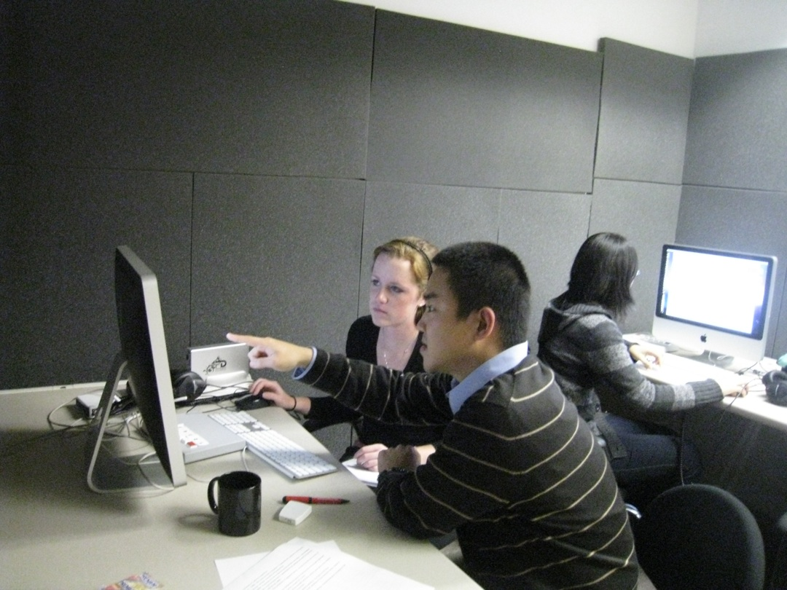
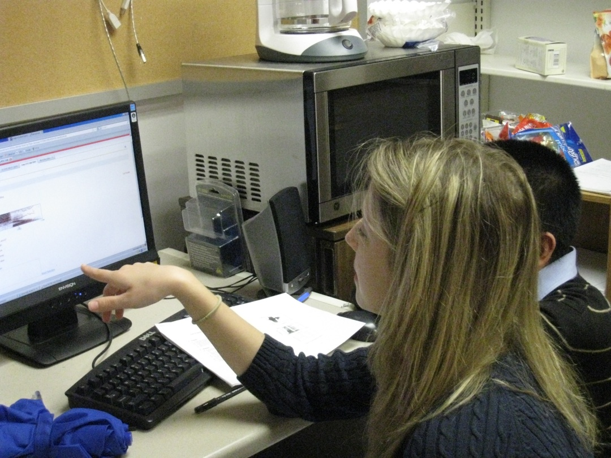
At the Rutgers phonetics lab, of which I was the director for a while, many undergraduate students worked on projects with our lab members. Here are some results of their efforts.
Here are some pictures of the lab students presenting their projects:
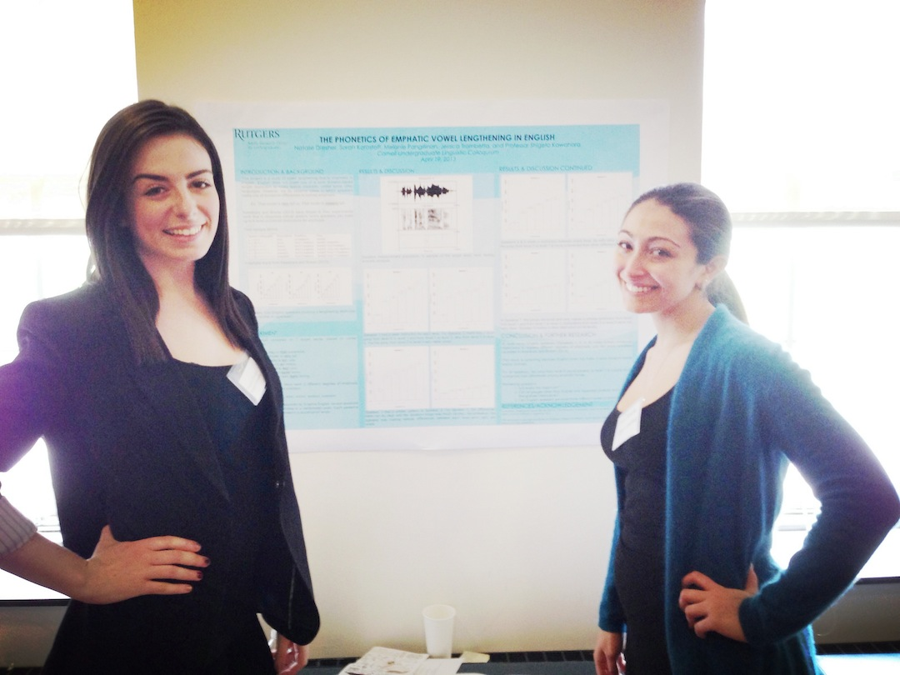
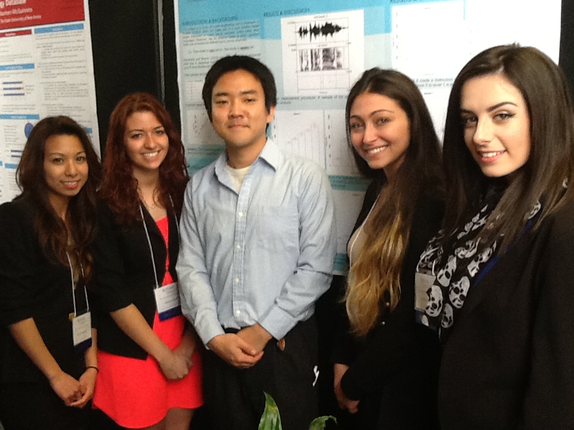
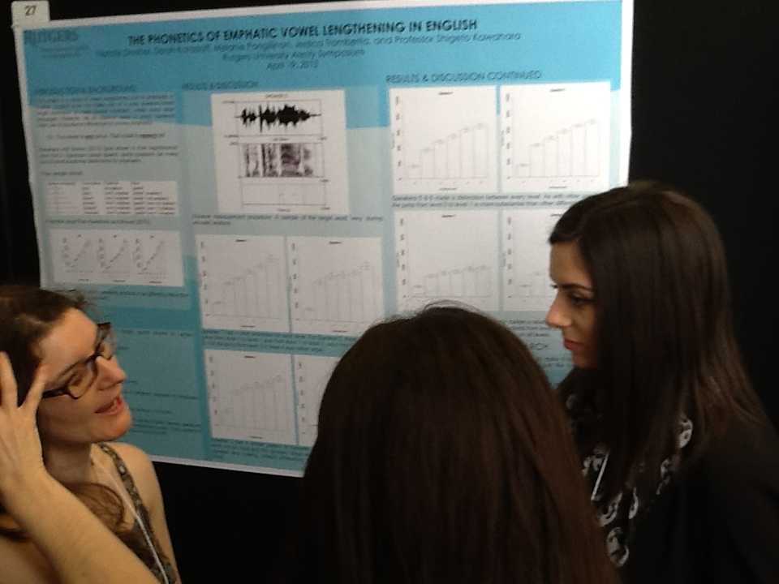
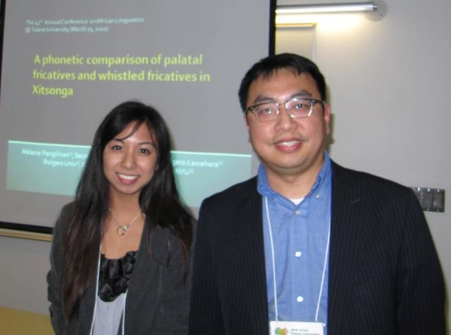
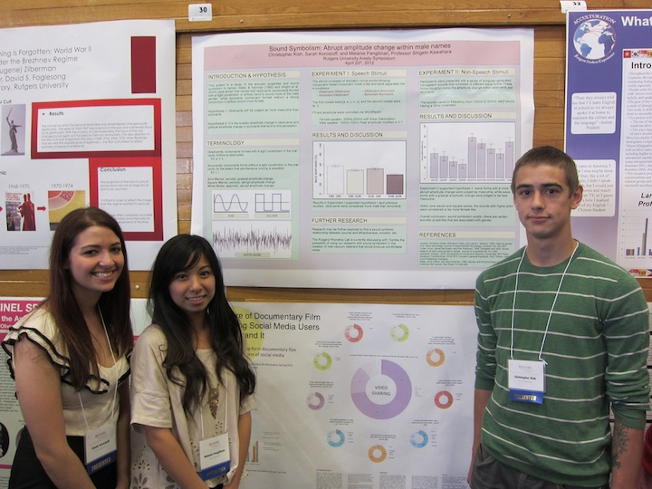
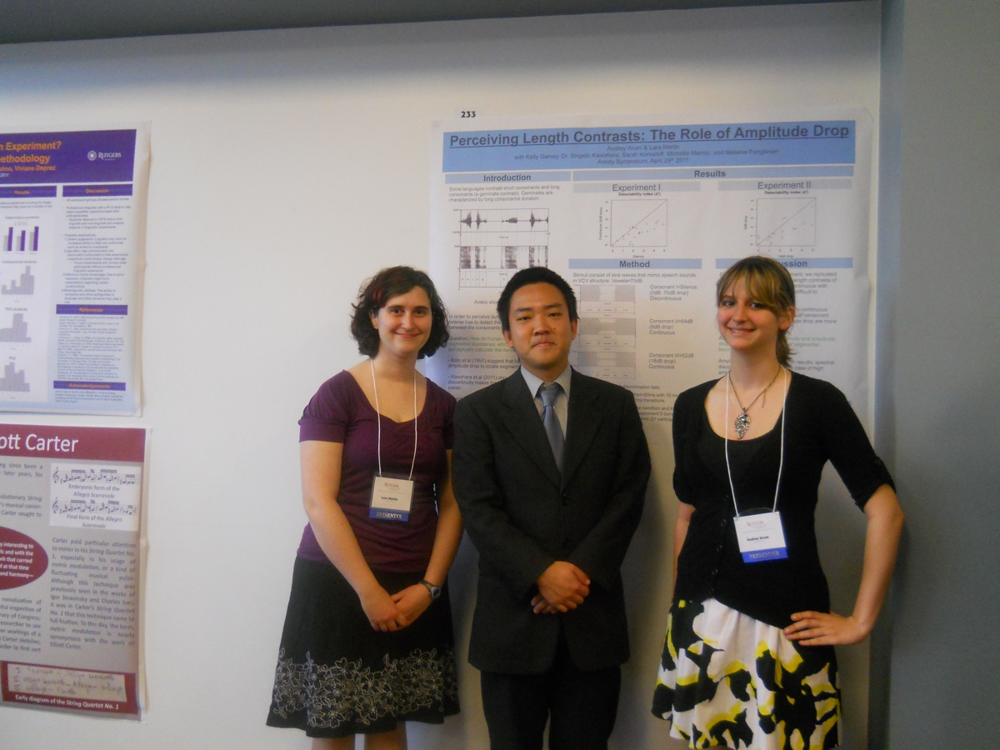
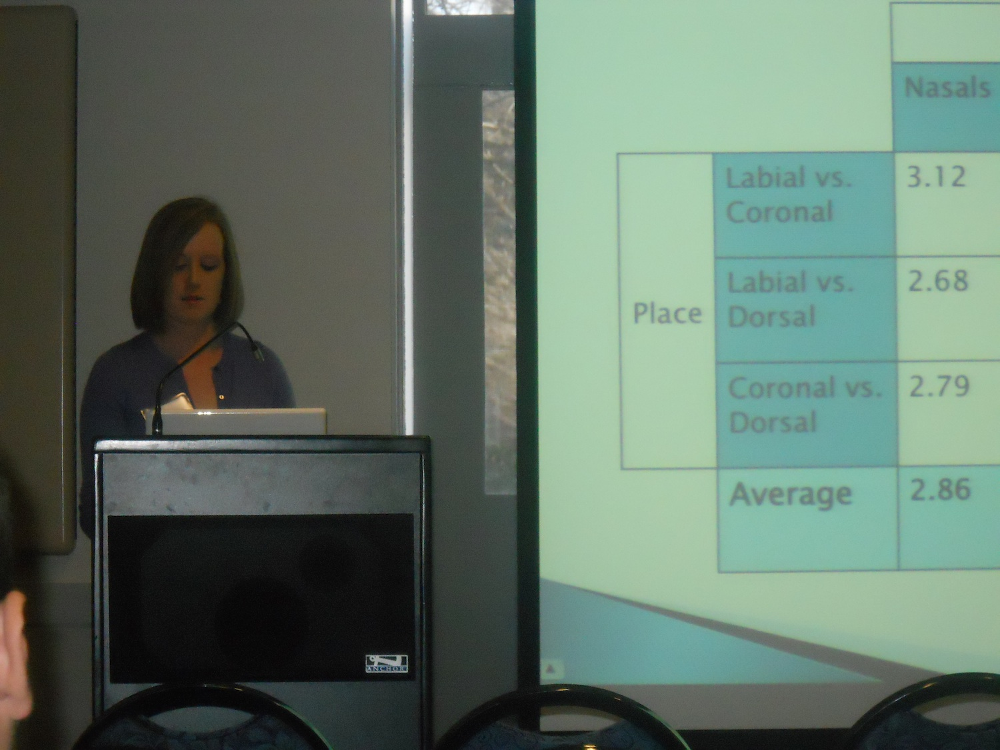
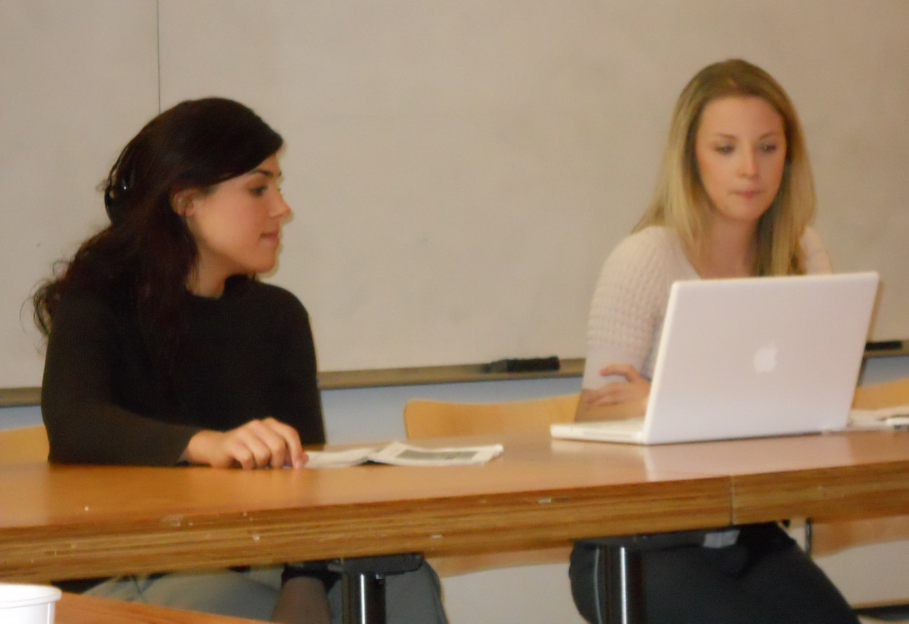
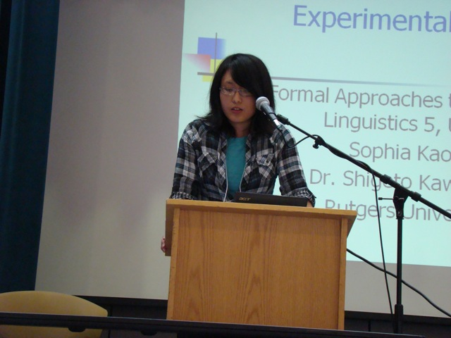
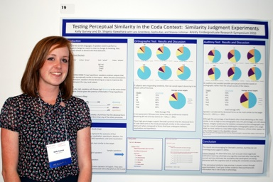
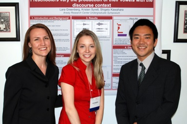
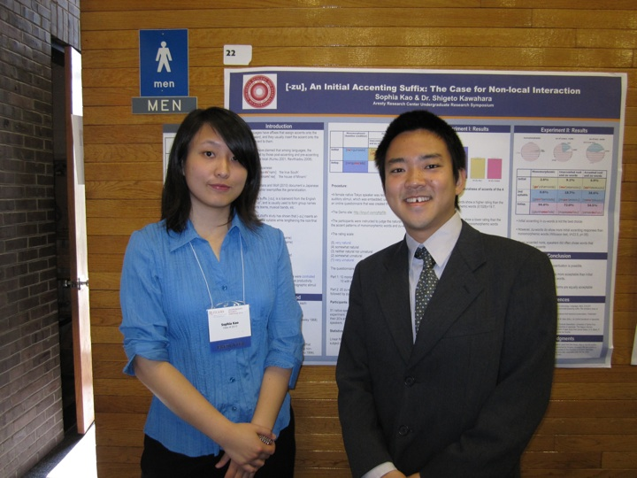
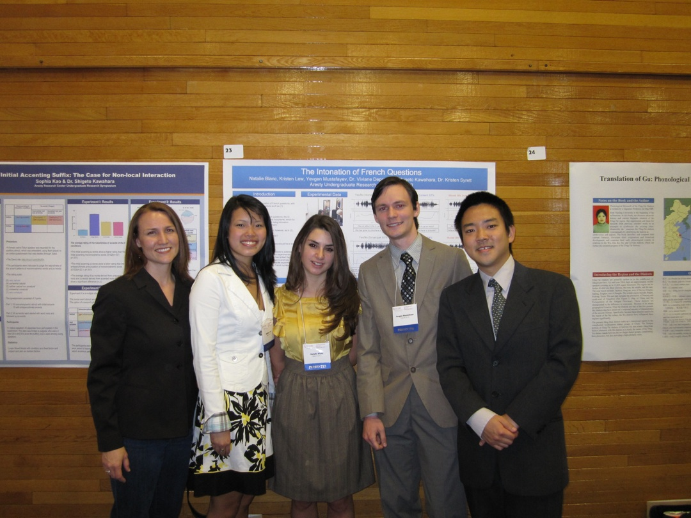
Courses taught
慶應
言語学特殊XI, XII （音声学）
GIC （音声学）
非常勤（音声学、言語学セミナー）
首都大学東京 (2015-2017)
国際基督教大学 (2015-2017)
関西学院大学 (2017)
東京言語研究所 (2017)
Rutgers
A graduate phonetics seminar
A graduate seminar on experimental linguistics
A graduate introduction to phonetics
A graduate advanced phonology
An undergraduate introduction to phonetics
An undergraduate practicum course on experimental linguistics
An undergraduate introduction to linguistics
University of Georgia
A graduate seminar (advanced phonetics & phonology, plus research skills)
A graduate introduction to phonetics
A graduate introduction to phonology
UMass, Amherst
The Structure of Japanese
An introduction to linguistics
非常勤（音声学、言語学セミナー）
Rutgers
University of Georgia
UMass, Amherst